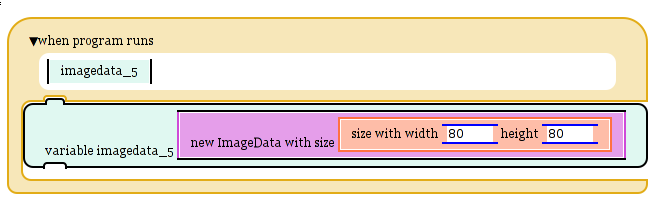
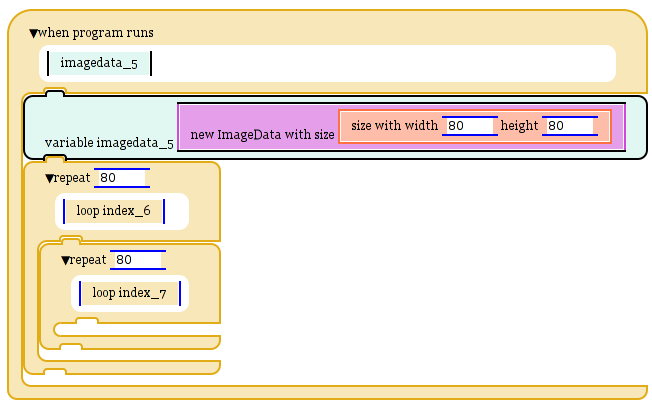
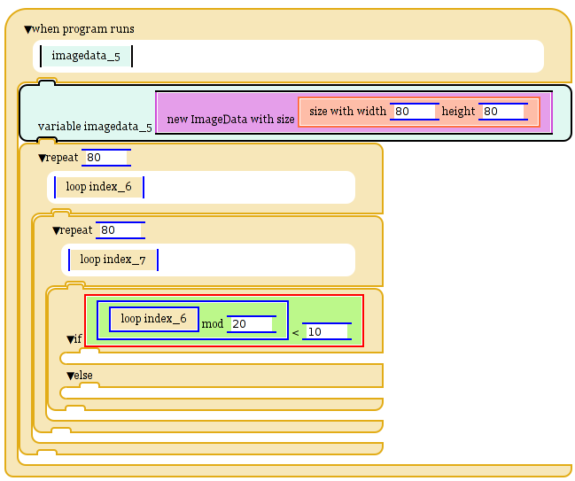
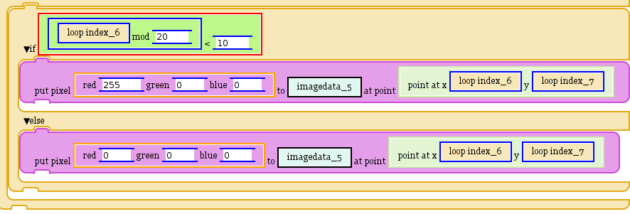
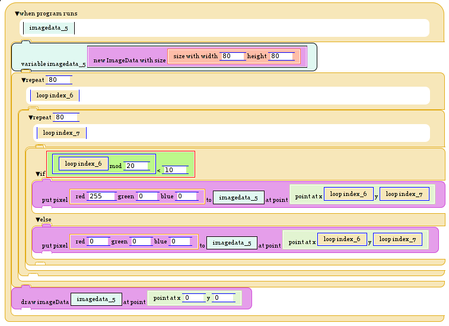
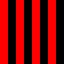

Welcome to project engage programming! This short tutorial will explain the basics of writing programs in this environment. In this tutorial, we will draw simple stripe pattern.
When you start the programming environemnt, you should see an empty space to build your program in, and a menu containing various blocks to build your program from. Start by opening the "Control" menu and dragging the "when program runs" block into the workspace. This block will execute when the "Run" button is pressed.
Next, we will need a surface to build the pattern on. Open the variables menu and drag the "variable imagedata" block to the "when program runs" block. Then drag open the image manipulation menu and add the "new ImageData with size" block to the slot within the imagedata variable block. Within this block, add the "size with width" block from the size menu. Set both the width and the height to 80. It should look like this now:
Next, we are going to loop through every single pixel in the image data. To do this, add two repeat loops from the control menu to the bottom of your script. Put one inside the other. Set both of the slots to 80.
For this program, we want to draw a red pixel if the remainder of the x-index divided by 20 is less than 10. This will cause a ten pixel wide red stipe to occur every 10 pixels. To do this, add an "if" block from the control menu to the inside of your loops. Within the if statement slot, put a "<" block from the math menu. On the right of the < put "10". On the left, put a "mod" block from the math menu. In the left argument of the mod, put the loop index of the outer loop. For the right argument, put "10". This will find the remainder when the x-index is divided by 20, and check if it is less than ten.
We're almost done! If the x-index divided by 20 is less than ten, we should put a red pixel on the image data. In the top section of the if statement, put a "put pixel" block from the image manipulation menu. For the first slot, put a "red _ green _ blue _" block from the image manipulation menu. Set the red to 255, and the other two arguments to zero. For the "to" argument of the put pixel block, put the image data we created at the begining of this tutorial. For the point, add a point block from the point menu. For the x argument of the point, put the loop index from our outer loop. For the y argument, put the loop index from our inner loop. This will put a red pixel to the image if we are drawing a stripe.
Now, put the exact same thing for the else slot of the if statement, except instead of red at 255, put all three colors at zero. This will put a black pixel to the image data if we are not drawing a stripe.
Finally, after the loops, put a "draw imageData" block from the image manipulation menu. For the first argument, put the imagedata object we created at the begining of this tutorial. For the point, put a point object from the point menu. Set both arguments on the point object to zero. The completed program should look like this:
Now press run. If you did everything right, it should look like this:
If you have problems, check that you did everything right. Look at a correct version of this program.
To see some more exciting things you can create with this environment, look at the demos page